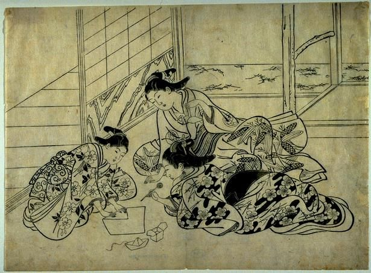
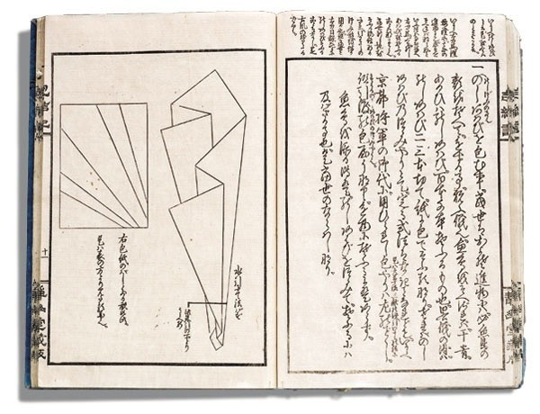

History
Distinct paperfolding traditions arose in Europe, China, and Japan which have been well-documented by historians. These seem to have been mostly separate traditions, until the 20th century.
In China, traditional funerals often include the burning of folded paper, most often representations of gold nuggets (yuanbao). The practice of burning paper representations instead of full-scale wood or clay replicas dates from the Song Dynasty (905–1125 CE), though it is not clear how much folding was involved.
In Japan, the earliest unambiguous reference to a paper model is in a short poem by Ihara Saikaku in 1680 which mentions a traditional butterfly design used during Shinto weddings.Folding filled some ceremonial functions in Edo period Japanese culture; noshi were attached to gifts, much like greeting cards are used today. This developed into a form of entertainment; the first two instructional books published in Japan are clearly recreational.

In Europe, there was a well-developed genre of napkin folding, which flourished during the 17th and 18th centuries. After this period, this genre declined and was mostly forgotten; historian Joan Sallas attributes this to the introduction of porcelain, which replaced complex napkin folds as a dinner-table status symbol among nobility.However, some of the techniques and bases associated with this tradition continued to be a part of European culture; folding was a significant part of Friedrich Froebel's "Kindergarten" method, and the designs published in connection with his curriculum are stylistically similar to the napkin fold repertoire. Another example of early origami in Europe is the "parajita," a stylized bird whose origins date from at least the nineteenth century.
When Japan opened its borders in the 1860s, as part of a modernization strategy, they imported Froebel's Kindergarten system—and with it, German ideas about paperfolding. This included the ban on cuts, and the starting shape of a bicolored square. These ideas, and some of the European folding repertoire, were integrated into the Japanese tradition. Before this, traditional Japanese sources use a variety of starting shapes, often had cuts; and if they had color or markings, these were added after the model was folded.
In the early 1900s, Akira Yoshizawa, Kosho Uchiyama, and others began creating and recording original origami works. Akira Yoshizawa in particular was responsible for a number of innovations, such as wet-folding and the Yoshizawa–Randlett diagramming system, and his work inspired a renaissance of the art form. During the 1980s a number of folders started systematically studying the mathematical properties of folded forms, which led to a rapid increase in the complexity of origami models.

Origami as Fine Art: For centuries, the art of paper folding remained within the scope of craft practices. But in the last fifty years or so, a renewed interest in understanding the behavior of folding matter, both artistically and scientifically, has given impetus to a new generation of artists whose works deserve to rank at the level of the fine arts. Origami has a characteristic that sets it apart from other arts: while painting requires the addition of matter, and sculpture involves subtraction, origami does not add or subtract: it transforms. The substrate on which the artist exercise the folding function can be paper or any other folding material (metal, acetate, etc.). Also called "new origami" to distinguish it from old craft practices, it had a rapid evolution in the last half century thanks to the contribution of computational mathematics and the development of techniques such as box-pleating, tessellations and wet-folding. Artists like Robert J. Lang, Erik Demaine, Sipho Mabona, Giang Dinh, Paul Jackson and others, are frequently cited to exemplify the way in which origami continues to push the limits of an art increasingly committed to its time. The computational facet and the interchanges through social networks, where new techniques and designs flow and are nurtured, have made origami a paradigmatic art of the 21st century.